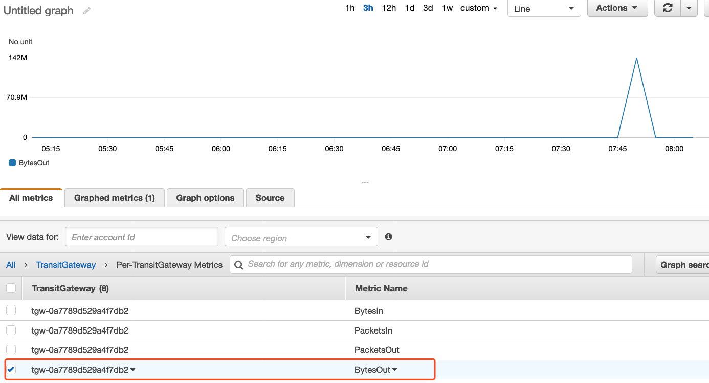

02-CloudWatch监控
请确保操作的区域是 AWS新加坡区域（ap-southeast-1）。
Amazon CloudWatch 是一个指标存储库。AWS 服务将指标放入存储库中，然后根据这些指标检索统计。在本章节中，您将查看 CloudWatch 中可用的一些网络指标，设置阈值警报，并设置仪表板以查看一组指标。
配置CloudWatch审核指标
- 导航到“CloudWatch” – “Metrics”
- 在 所有指标 “All Metrics”, 导航到 “Transit Gateway” – “Per-TransitGateway Metrics”
- 选择度量标准 “BytesOut”

您可以使用该指标来查看TGW 的总体网络流量。
- 取消选择上面选择的两个指标
- 在“All Metrics” 下选择“All”
- 单击“EC2” – “Per-Instance Metrics” （基于实例的指标）
- 您可以使用此指标来查看“网络输入/输出”统计信息（以字节为单位）。还可以在CloudWatch中查看连接到EC2实例的每个ENI的Packets In / Out统计信息。
- 通过在搜索中输入” Network”，筛选名称中包含“Network”的指标列表
- 选择 VPC Hub 中 EC2 实例的指标” NetworkIn “（网络输入）和” NetworkOut”（网络输出）
创建报警
您可以创建CloudWatch警报，用于监视指定的 CloudWatch 指标。当指标达到您指定的阈值时，CloudWatch 将自动向您发送通知。
在本节中，您将创建一个警报，用于监视EC2的流量的状态。如果 EC2的流量超过了1 Gbps，将发送电子邮件通知。
- 导航到“CloudWatch” – “Alarms”
- 单击 “Create alarm”
- 单击“Select metric”
- 单击 “EC2” 、 “Per-Instance Metrics”、“NetworkOut”
- 目前看到我们模拟流量之后，EC2的流量现在已经将为差不多是零的状态
- 单击 右下方的 “Select metric”
- 在指标配置下，将统计信息更改为 最大值 “Maximum”
- 将时间段更改为1 分钟 “1 minute”
- 在Conditions（条件）配置里，更改条件 “Whenever NetworkOut is…” 为 “Greater/Equal” than “1000000000” （当值高于1,000,000,000个字节时，约等于1Gbps）
- 单击“Next”
- 在“Select an SNS topic” 选择新建 “Create new topic”
- 输入你喜欢的主题名字，例如 “shenzhen-im-day-EC2alarm”
- 输入您要接收警报通知的电子邮件地址。请输入有效的电子邮件地址，以便在后面的步骤中可以接收通知
- 单击“Create topic”
- 单击“Next”
- 输入你喜欢的警报名字，例如 “shenzhen-im-day-EC2alarm”
- 单击“Next”
- 审查配置并单击“Create alarm”
警报的"状态"可能显示"数据不足”，直到警报收到足够的数据点。
在"Actions"下，您可能会看到“Pending confirmation”（待定确认），这意味着您尚未确认订阅。进入您的电子邮件，打开来自” AWS Notifications"的新邮件并确认订阅（点击邮件中的连接）。
点击邮件的确认连接之后，刷新界面，就可以看到Action 的地方有变化了。
再次模拟流量，触发告警
这个时候，我们依照之前的方法，登录到Spoke1中的EC2实例“spoke1-sub-1a”上执行以下操作。
ssh -i lab3.pem ec2-user@<PUBLIC IP>
iperf3 -s
在VPC Hub中的EC2实例 “hub-sub-1a” 上执行以下操作
- 通过SSH进入VPC A中的EC2实例 “EC2 VPC A – AZ1”
ssh -i lab3.pem ec2-user@<PUBLIC IP>
设置2 个数据流并发、持续传输30秒的TCP连接到Spoke1中的EC2实例“spoke-sub-1a”（请使用私有IP）
iperf3 -c <PRIVATE IP OF SPOKE1 INSTANCE 10.1.0.X> -P 2 -t 30
等待30秒流量传完，我们再查看CloudWatch界面，查看CloudWatch的告警状态。
同时，我们订阅的邮箱也可以看到相应的告警了。
创建仪表板
Amazon CloudWatch 仪表板主页是可自定义的，可用于在单个视图中监视资源，甚至用于跨不同区域的资源。您可以使用 CloudWatch 仪表板为 AWS 资源创建指标和警报的自定义视图。
在本章节中，您将为在实验2中配置的与Transit Gateway关联的Site-to-Site VPN创建CloudWatch仪表板。
- 导航到仪表板 " CloudWatch " = " Dashboards "
- 单击创建仪表板 “Create dashboard”
- 输入你喜欢的名字，例如 “Shenzhen-im-day”
- 单击“Create dashboard”
- 选择Line
- 选择 Metrics
- 选择右下方的 Configure
- 导航到 “Transit Gateway” – “Per-TransitGateway Metrics”
- 选择“ByetsIn”
- 单击“Create Widget” 然后，小部件将放置在仪表板上。
- 你也可以接着添加其他的服务的任何指标到这个仪表盘中，这个主要根据自己要关注的服务和关键的指标。
- 完成后单击 “Save dashboard” 保存